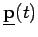
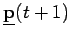
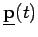
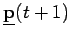
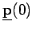
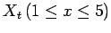
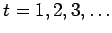
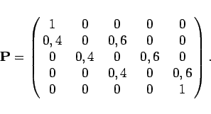
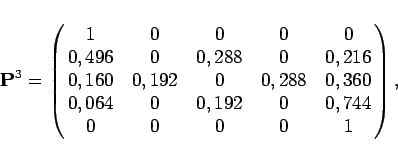

Inhalt Index DeskTop Bronstein

 Wahrscheinlichkeitsrechnung und Mathematische Statistik Wahrscheinlichkeitsrechnung Stochastische Prozesse und stochastische Ketten Grundbegriffe, Markoffsche Ketten
Wahrscheinlichkeitsrechnung und Mathematische Statistik Wahrscheinlichkeitsrechnung Stochastische Prozesse und stochastische Ketten Grundbegriffe, Markoffsche Ketten


Die Übergangsmatrix  einer homogenen MARKOFFschen Kette gemäß (16.115a,b,c) sei bekannt. Ausgehend von der Wahrscheinlichkeitsverteilung zum Zeitpunkt t soll die Wahrscheinlichkeitsverteilung zum Zeitpunkt t+1 berechnet werden, d.h., aus
einer homogenen MARKOFFschen Kette gemäß (16.115a,b,c) sei bekannt. Ausgehend von der Wahrscheinlichkeitsverteilung zum Zeitpunkt t soll die Wahrscheinlichkeitsverteilung zum Zeitpunkt t+1 berechnet werden, d.h., aus  und  ist  zu bestimmen. Es gil:
und  ist  zu bestimmen. Es gil:
und weiter
Bemerkungen:
d.h, eine homogene MARKOFFsche Kette ist durch die Anfangsverteilung  und die Übergangsmatrix  bestimmt.
bestimmt.
| Beispiel |
|
Ein Teilchen verändere seine Lage (Zustand)  längs einer Geraden zu den Zeitpunkten  nach der folgenden Vorschrift:


|